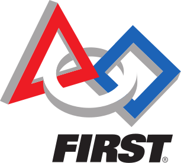
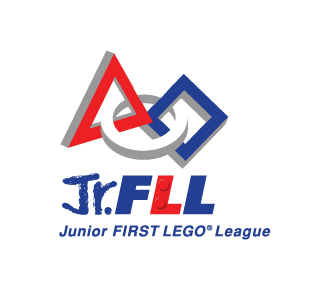
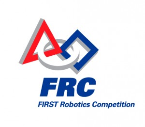
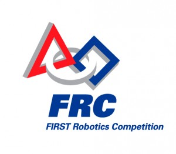

FIRST
 FIRST stands for For Inspiration and Recognition of Science and Technology. It is an organization that promotes the idea of STEM (Science, Technology, Engineering, Mathematics) to students all around the world by inspiring them to design and build robots for a competition. FIRST hosts four competitions: Jr FLL, FLL, FTC, and FRC.


 
